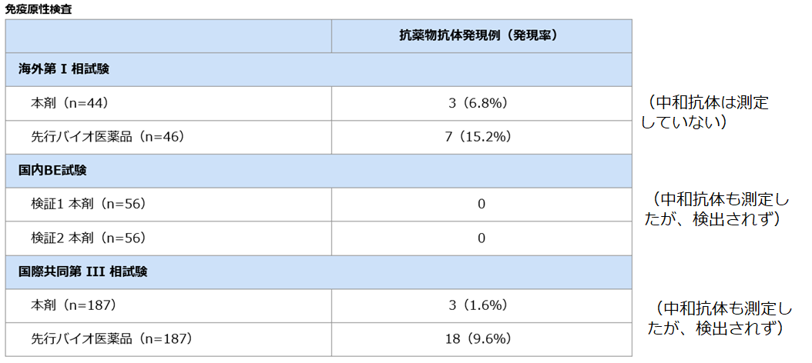

参考：エタネルセプトBSと先発品の免疫原性

あゆみのエタネルセプトBSは、先発品よりも抗体発現率が低いように見える？先発品と異なる特徴
１）持田製薬社内資料（海外第I相試験）
２）Matsuno H, et al. Ann Rheum Dis 2018;77:488-494.
３）持田製薬社内資料（国際共同第 III 相試験）（承認時評価資料）
あゆみのエタネルセプトBSは、先発品よりも抗体発現率が低いように見える？先発品と異なる特徴
１）持田製薬社内資料（海外第I相試験）
２）Matsuno H, et al. Ann Rheum Dis 2018;77:488-494.
３）持田製薬社内資料（国際共同第 III 相試験）（承認時評価資料）